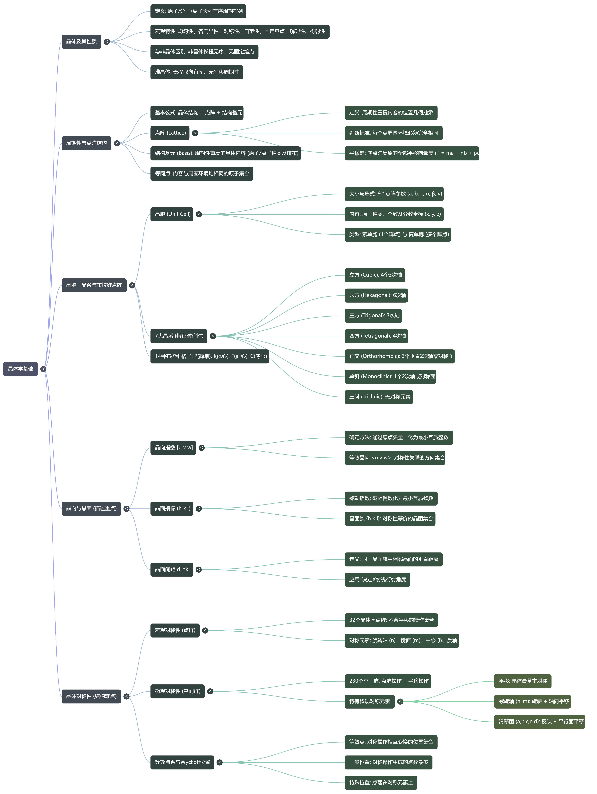
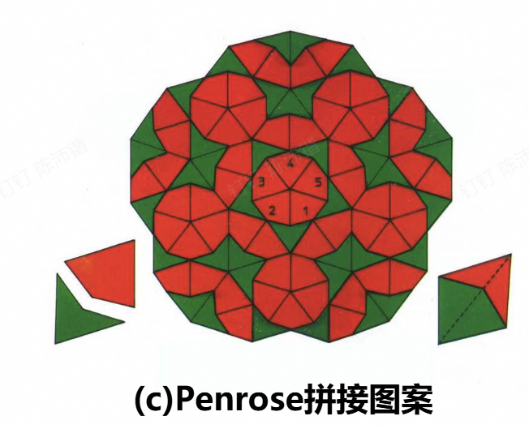
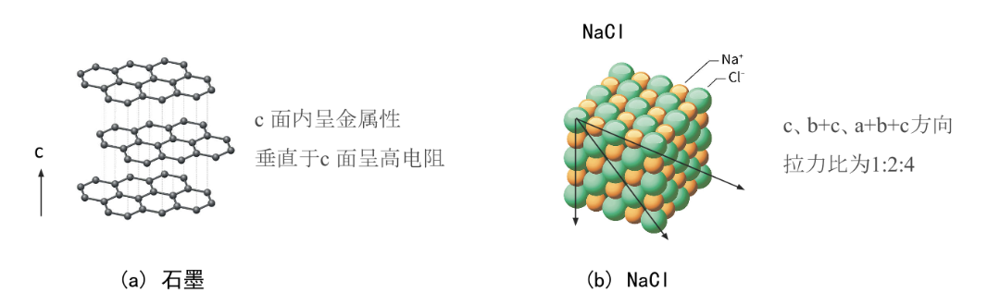
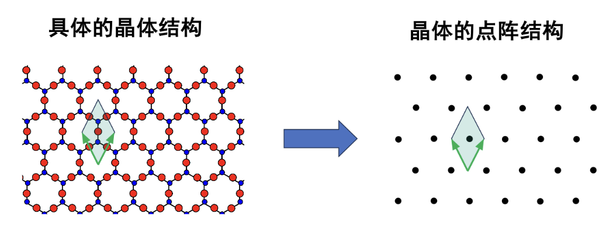
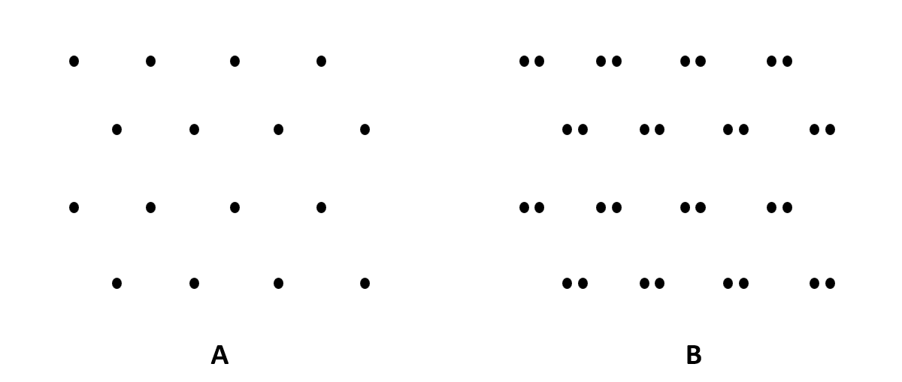
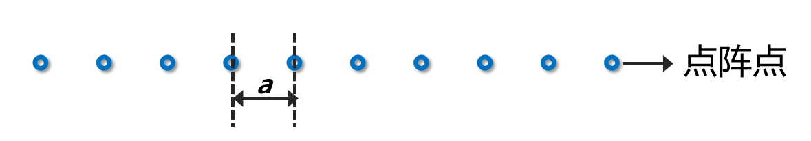
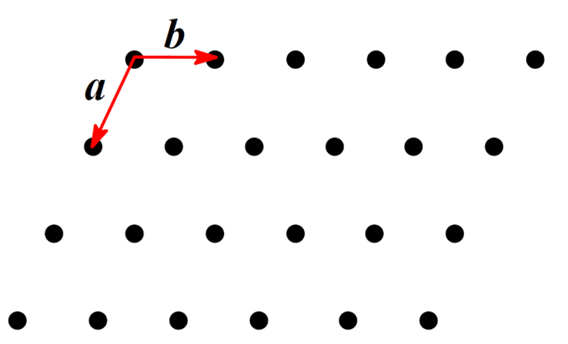
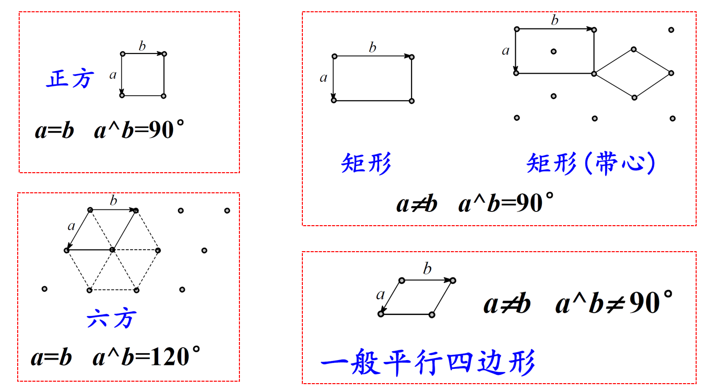

Chapter 1：晶体学基础¶

1.1 晶体及其性质¶
非晶体中原子排列无长程周期性，但保留了原子排列的短程序：即近邻原子的数目和种类、近邻原子之间的距离(键长)、近邻原子配置的几何方位(键角)
准晶体具有长程的取向序，但没有长程的平移对称序，可以用Penrose拼接图案显示其结构特点。如图，所有菱形的边缘走向，被严格限制在 5 个固定的方向上，即为取向序。准晶体具有与晶体相似的长程有序的原子排列，但是准晶体不具备晶体的平移对称性。

晶体的性质：
均匀性；
各向异性：不同的方向上晶体中原子排列情况不同

对称性：晶体在某几个特定方向上可以异向同性，这种相同的性质在不同的方向上有规律地重复出现，称为晶体的对称性。
自限性/自范性： 晶体自发形成具有凸多面体外形的性质 满足欧拉公式：晶面+顶点=晶棱+2 F+V=E+2
固定的熔点
其他性质： 具有解理性（沿确定方位的晶面劈裂）、能对X射线产生衍射、属于同一品种的晶体晶面夹角守恒等
1.2 晶体的周期性与点阵结构¶
晶体结构 = 点阵 + 结构基元¶
结构基元： 重复出现的具体内容（原子、分子的种类、数量及排列方式）
点阵 ： 重复出现内容的位置关系（将结构基元抽象为一个几何点阵点）
重复周期的大小与方向：平移矢量

当把结构基元抽象为点阵点时，这个点可以是结构基元的重心，也可以是结构基元中的任意一个原子。由它们抽象得到的周期性的排列方式完全相同。
点阵的定义与判断标准¶
点阵是对周期性排列物体的数学抽象表达，平移群是它的代数描述。
点阵是一组无限的点，连接其中任意两点可得一向量，按此向量平移能使整个体系复原
判断一组点是否为点阵： 每个点的周围环境必须完全相同 任意两个点连线对应的平移应使整体复原 点阵是无限延拓的周期点集 点阵点是等价位置，点阵点不是具体原子种类

上图中：A是点阵，B不是。A满足点阵定义，而B组相邻2个点的周围环境不等价
晶体点阵的类型、描述方式和点阵格子¶
① 直线点阵(one-dimensional lattice)

基本周期：相邻两点间的距离 a 叫基本周期。 平移群：点阵的代数形式，能使点阵复原的全部平移向量集称为平移群。
一维直线点阵平移群的代数描述： T = m·a （m=0, ±1, ±2, ….） a 为直线点阵格子的基矢
② 平面点阵(two-dimensional lattice)

平面点阵中，可以找到两个独立的不平行的基本向量。
平面点阵平移群的代数描述：
\(a, b\) 为平面点阵格子的基矢
平面格子：沿二个方向将全部点阵点连结起来，即得到平面格子。整个平面点阵可视为无数个这样的平行四边形格子并置而成。
素格子：摊到一个点阵点的单位，网格中最小的平行四边形 复格子：摊到一个以上点阵点的单位
正当单位：①具有较规则形状的、②对称性高，③在满足对称性高前提下，面积较小的平行四边形。
平面点阵的正当单位可有四种形状，五种型式：

图中 \(a, b\) 为平面点阵格子的基矢（可以完全描述点阵的排列规律，大小和方向）
Q：试证明平面正方点阵不存在带心正方点阵形式。